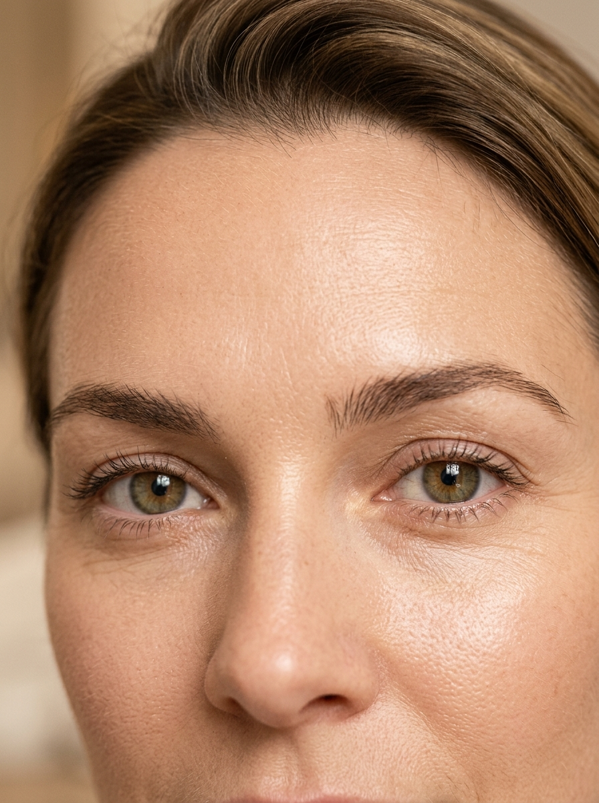
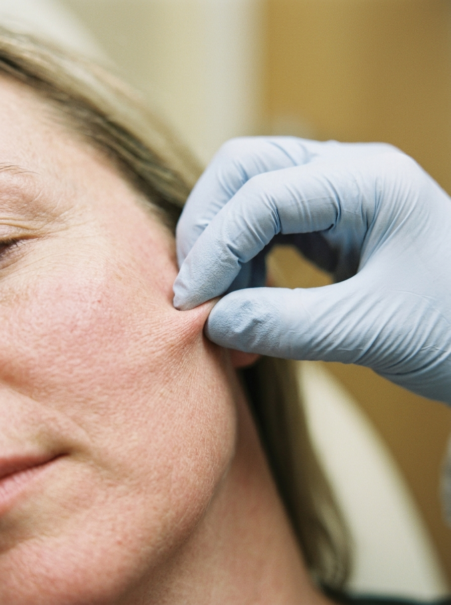
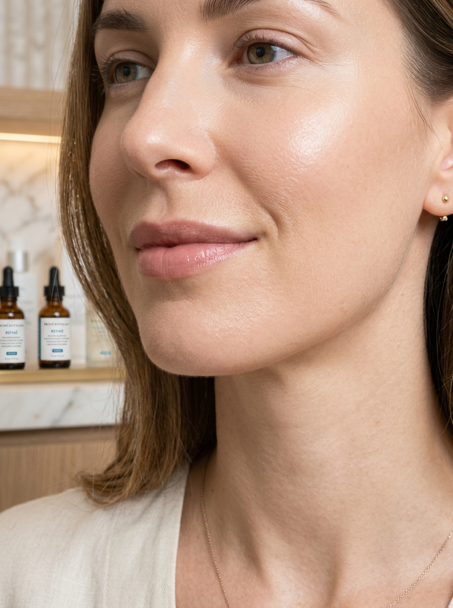
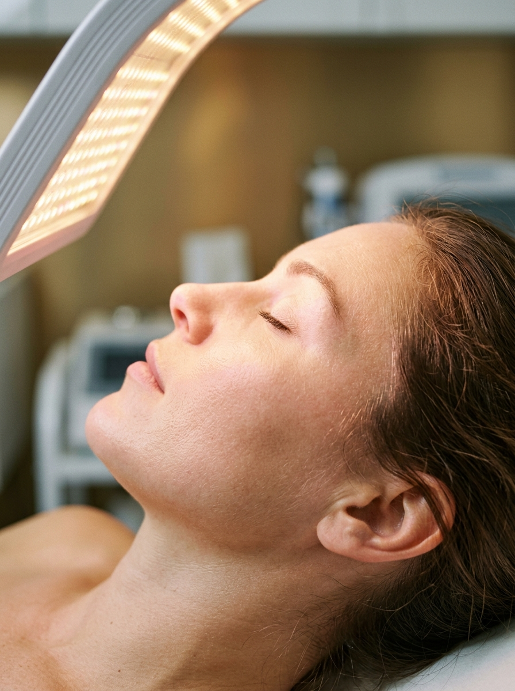

Sua pele é única.
Seu tratamento também deve ser.|
Cuidado individualizado para compreender as necessidades da sua pele e indicar tratamentos que faça sentido para você, unindo saúde, estética e tecnologia.
Cada pele tem suas necessidades únicas.
Pensando nisso, ofereço uma gama de tratamentos estéticos personalizados para ajudar você a alcançar resultados naturais e duradouros, unindo saúde, estética e tecnologia.

Botox
TOXINA BOTULÍNICA
Bioestimuladores
de Colágeno
RADIESSE & SCULPTRA

Preenchimento
ÁCIDO HIALURÔNICOUltrassom
Microfocado
ULTRAFORMER MPT

Laser & Manchas
CONTROLE DE MELASMATecnologias de ponta a serviço da sua autoestima
Equipamentos modernos e protocolos consolidados para entregar resultados superiores com o máximo de conforto.
Laser Avançado & Luz Intensa Pulsada
Tecnologia de precisão para renovação celular, estímulo térmico de colágeno e clareamento de manchas.
- Suavização de poros dilatos e textura irregular da pele.
- Tratamento ético para melasma, sardas e manchas de sol.
- Estimulação de colágeno sem necessidade de longo repouso.
Bioestimuladores de Colágeno
Substâncias injetáveis biocompatíveis que estimulam o organismo a produzir seu próprio colágeno.
- Combate à flacidez facial e corporal de forma progressiva.
- Melhora da espessura, sustentação e firmeza da pele.
- Resultados duradouros e com aparência completamente natural.
Ultrassom Microfocado (Lifting Não Invasivo)
Atinge as camadas mais profundas da pele promovendo pontos de coagulação que tracionam e firmam os tecidos.
- Definição do contorno mandibular e redução da papada.
- Efeito lifting natural sem cortes ou cirurgia.
- Estímulo de colágeno nas camadas profundas e fasciais.
Microagulhamento Robótico & Drug Delivery
Agulhas banhadas a ouro com radiofrequência que entregam ativos dermatológicos diretamente onde a pele precisa.
- Tratamento profundo de cicatrizes de acne e estrias.
- Permeação máxima de princípios ativos concentrados.
- Estímulo duplo de elastina e remodelação tecidual.
Mapeamento Digital da Pele
Análise profunda por imagem para avaliar manchas subclínicas, vascularização, poros e hidratação.
- Diagnóstico preciso antes da indicação de qualquer protocolo.
- Acompanhamento comparativo da evolução do tratamento.
- Planejamento médico personalizado focado na prevenção.
Prazer, sou a Dra. Martina Valadão
Médica • Saúde da Pele & Procedimentos Estéticos
Acredito que cuidar da pele é uma forma de autocuidado que vai além da estética. Minha missão é proporcionar tratamentos que respeitem a sua individualidade, valorizando sua beleza real.
Com formação médica sólida e atualização constante em tecnologias dermatológicas, ofereço um atendimento ético, acolhedor e focado na sua segurança.
Cada paciente é única e merece um plano de tratamento exclusivo, desenhado de acordo com seus objetivos e estilo de vida.
O que dizem as pacientes sobre seus tratamentos
Cada plano de cuidado é individualizado. Veja as experiências de pacientes que transformaram a saúde, a firmeza e o viço da sua pele com naturalidade e respaldo médico.
"A Dra. Martina tem uma sensibilidade e delicadeza incríveis! Ela entendeu exatamente o que meu rosto precisava sem exagerar em nada. Os bioestimuladores devolveram a firmeza que eu tanto desejava."
"Fiz o Ultraformer e o efeito lifting no contorno da mandíbula foi impressionante. O melhor é que ninguém diz que fiz procedimento, apenas elogiam que pareço muito mais descansada e rejuvenescida."
"Morria de receio de ficar artificial. A Dra. Martina me acolheu, explicou cada ponto anatômico com calma e fez apenas ajustes sutis. O resultado ficou leve e super harmônico!"
"Sofria com melasma persistente há anos e já havia tentado inúmeros produtos. O protocolo personalizado com laser e orientação médica mudou a minha autoestima de verdade."
"A consulta é uma verdadeira aula sobre a nossa pele. Ela não empurra procedimentos desnecessários, analisa tudo com critério científico e foco a longo prazo. Sou paciente fiel!"
"O protocolo para olheiras e hidratação profunda transformou meu olhar. Não preciso mais de corretivo pesado no dia a dia. Gratidão imensa pelo cuidado tão carinhoso da Dra. Martina."
"Atendimento humano e acolhedor somado a tecnologias de última geração. O cuidado no pós-procedimento e a disponibilidade para tirar dúvidas me fizeram sentir em total segurança."
"Tinha muita sensibilidade e rosácea. A Dra. Martina estabilizou minha barreira cutânea antes de indicar qualquer tecnologia. Minha pele hoje tem viço, saúde e calma."
"Excelente profissional! O ambiente do consultório é aconchegante e os resultados da toxina botulínica ficaram ultra leves, preservando todas as minhas expressões com naturalidade."
Perguntas frequentes
Na primeira consulta, é realizada uma avaliação médica completa do histórico da sua pele, estilo de vida e expectativas. Mapeamos as necessidades específicas antes de indicar qualquer tratamento ou protocolo tecnológico.
Cada pele é única. A indicação exata depende da avaliação presencial, onde analisamos textura, firmeza, manchas e sensibilidade para criar um plano personalizado.
A maioria das tecnologias utilizadas permite que você retorne às suas atividades diárias imediatamente ou em pouquíssimo tempo, sempre com as devidas orientações de proteção solar e hidratação pós-procedimento.
Você pode agendar diretamente pelo WhatsApp clicando nos botões da página. Nossa equipe de atendimento irá orientar você sobre horários disponíveis e local de atendimento.